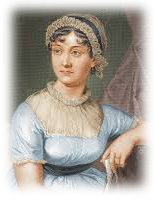

Persuasion is Jane Austen's last completed novel. She began it soon after she had finished Emma and completed it in August 1816. She died, at age 41, in 1817 and Persuasion was published in December of that year.
The book is linked to Northanger Abbey not only by the fact that the two books were originally bound up in one volume and published together, but also because both stories are set partly in Bath, a fashionable city with which Austen was well acquainted, having lived there from 1801 to 1805. As in Northanger Abbey, the superficial social life of Bath is portrayed extensively and serves as a setting for the second half of the book.
In many respects, Persuasion marks a break with Austen's previous works, both in the more biting, even irritable satire directed at some of the novel's characters and in the regretful, resigned outlook of its otherwise admirable heroine, Anne Elliot, in the first part of the story. Against this is set the energy and appeal of the Royal Navy, which symbolises for Anne and the reader the possibility of a more outgoing, engaged, and fulfilling life.
Find out more about Jane Austen's Persuasion here.Download the book here.